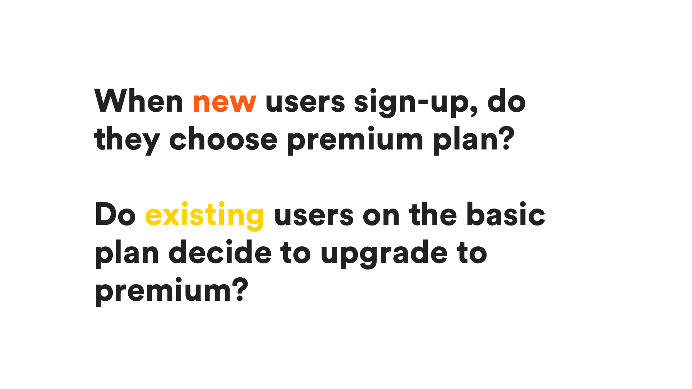

Go Premium
Idea
Let’s create a tiered, ‘premium membership for Daily Burn.
How do we measure success?
We’d also be carefully tracking retention of the premium users.
Signup has direct impact on revenue. We prototyped and tested two different flows against each other. Option A offers premium as a plan selection screen. Option B is a secondary offer, presented after user has signed up.
What flows would new users go through and what would they would see?
For existing users, content would need to be restricted, in a smart, obvious way.

For existing users, content would need to be restricted, in a smart, obvious way.
Paused and churned users represent about 15-25% of our subscribers. We wanted to offer premium to these users when they reactivate.
One solution was an upgrade web-page that could handle subscription switches, or leave it to support.
This upgrade system needed to work for all payment processeor/platform combinations. That’s a lot of flows, copy, and potential errors!
What we shipped
Simple, quick. A/B test. Explains benefits.
One quick tap to upgrade. Boom!
Simple screen, but big upside for business.
It's a little to early to tell about retention, but overall looks like a net positive.
What I learnt
For a first release, don’t try and be clever. Ship something that works and is simple. Iterate later.
Writing copy is extremely difficult when there’s a million different protypes, builds and mockups floating around. Pick something that will become the ‘single source of truth’. Copywriters will love you.